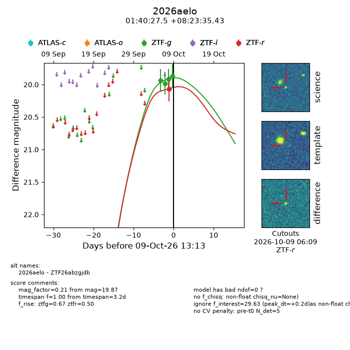
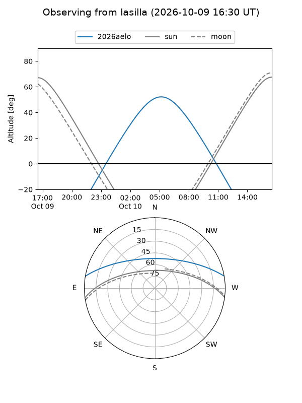
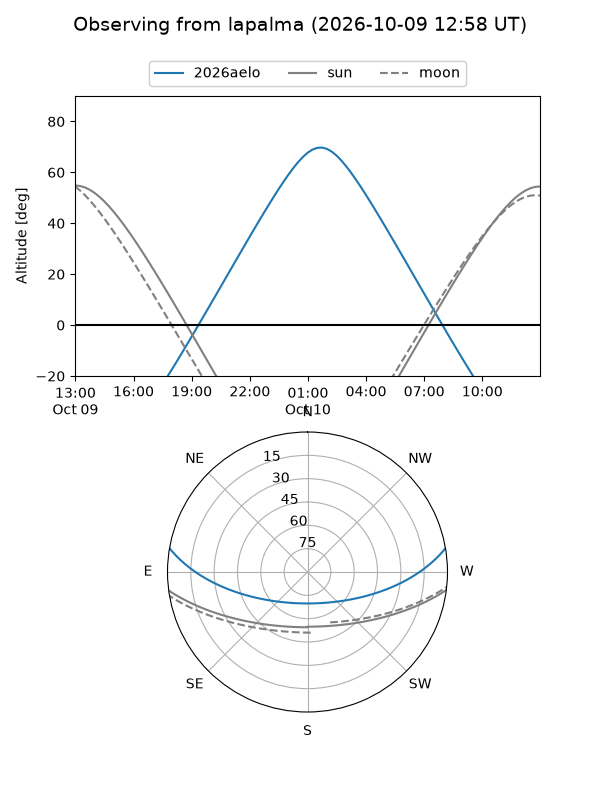
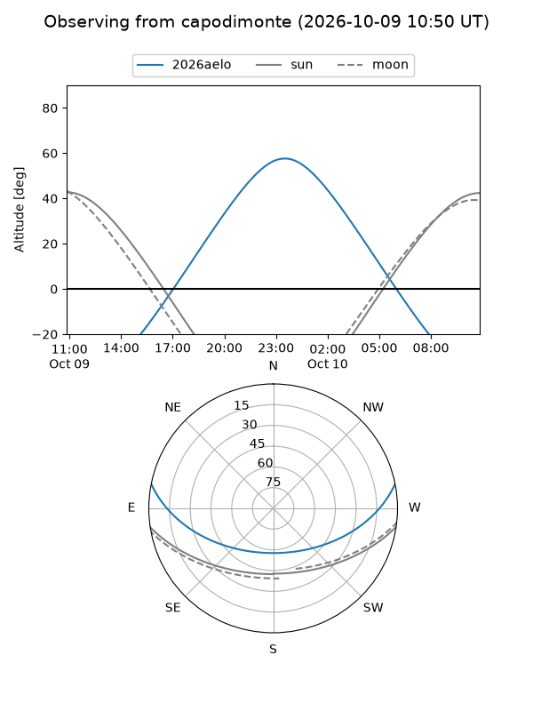
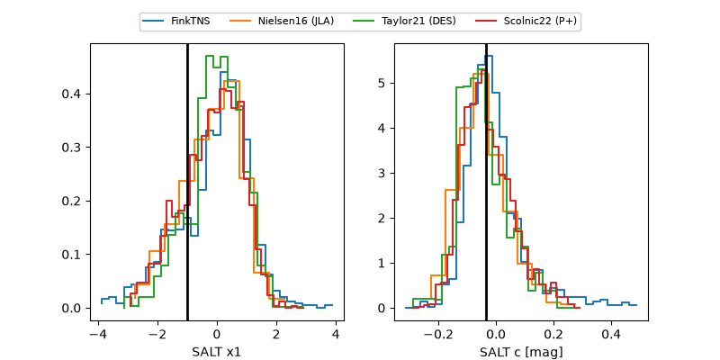

2026aelo
Target 2026aelo at 2026-10-09 13:16
Aliases and brokers:
FINK-ZTF: ztf.fink-portal.org/ZTF26abzgjdb
Lasair-ZTF: lasair-ztf.lsst.ac.uk/objects/ZTF26abzgjdb
ALeRCE-ZTF: alerce.online/object/ZTF26abzgjdb
YSE-PZ: ziggy.ucolick.org/yse/transient_detail/2026aelo
TNS name: wis-tns.org/object/2026aelo
Direct TNS query: direct search
alt names
ZTF26abzgjdb (ztf,fink_ztf)
2026aelo (tns,yse)
Coordinates:
equatorial (ra, dec) = 25.1146,+8.39318
equatorial (HMS+DMS) = 01:40:27.50,+08:23:35.43
galactic (l, b) = (143.1323,-52.54532)
Flags:
peak dt: +0.2
Photometry:
last ztfg=19.87, ztfr=20.07
4 ztfg, 1 ztfr detections
Lightcurve

Visibility



Additional plots
